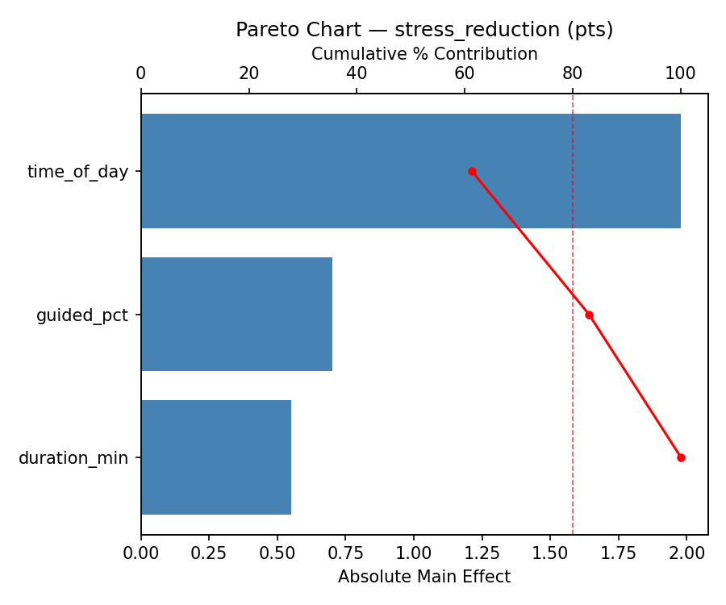
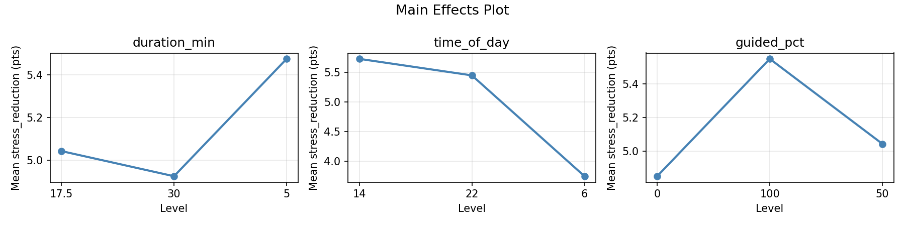
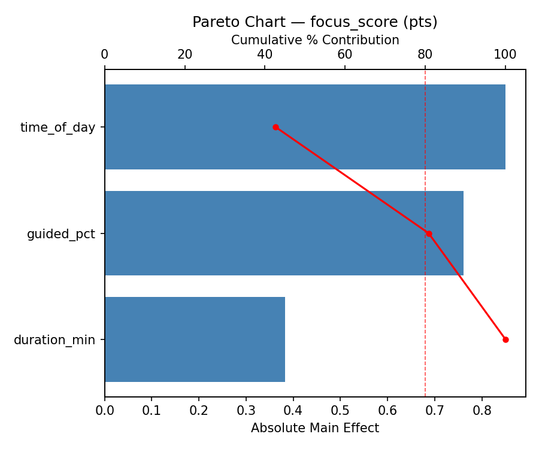
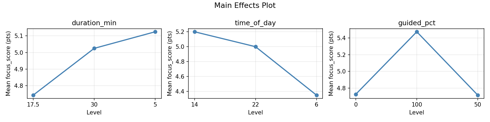
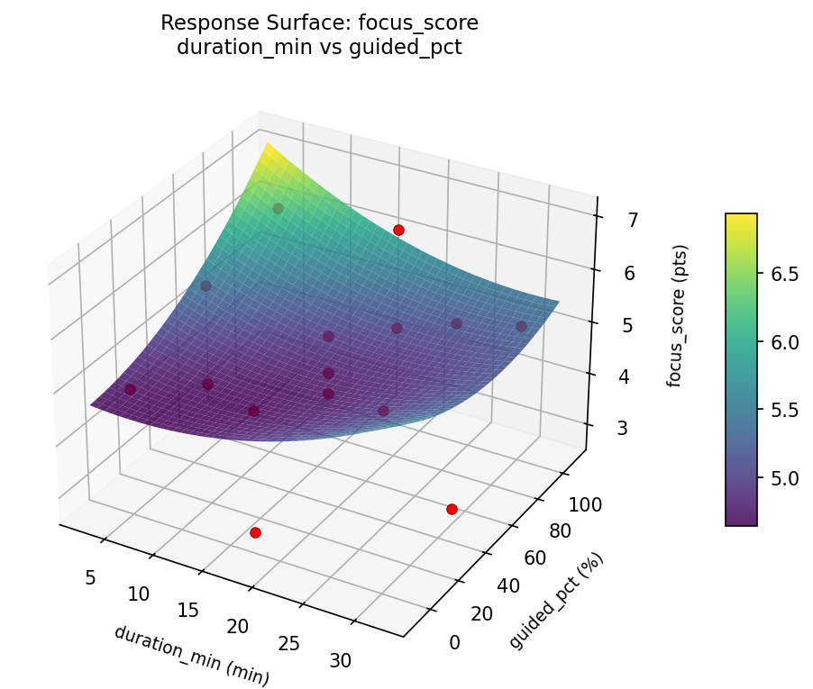
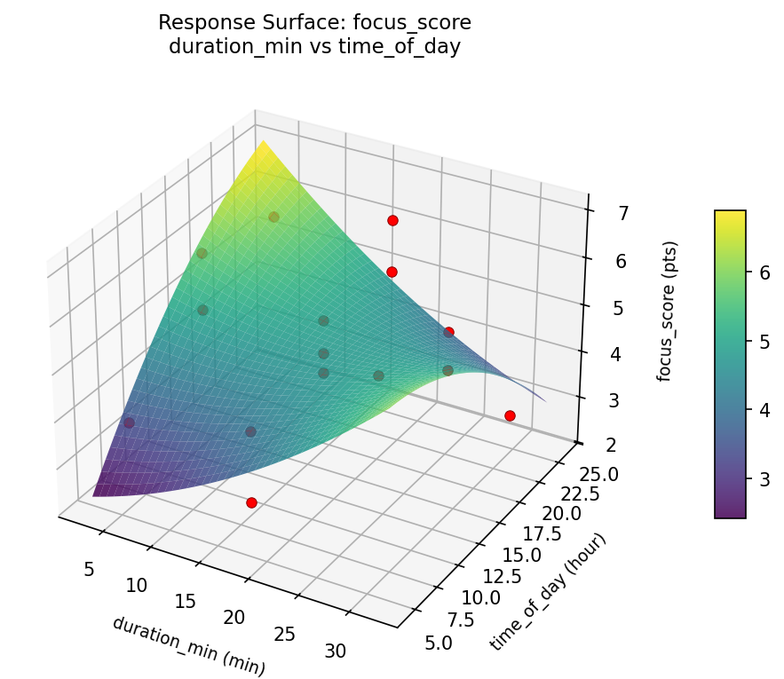
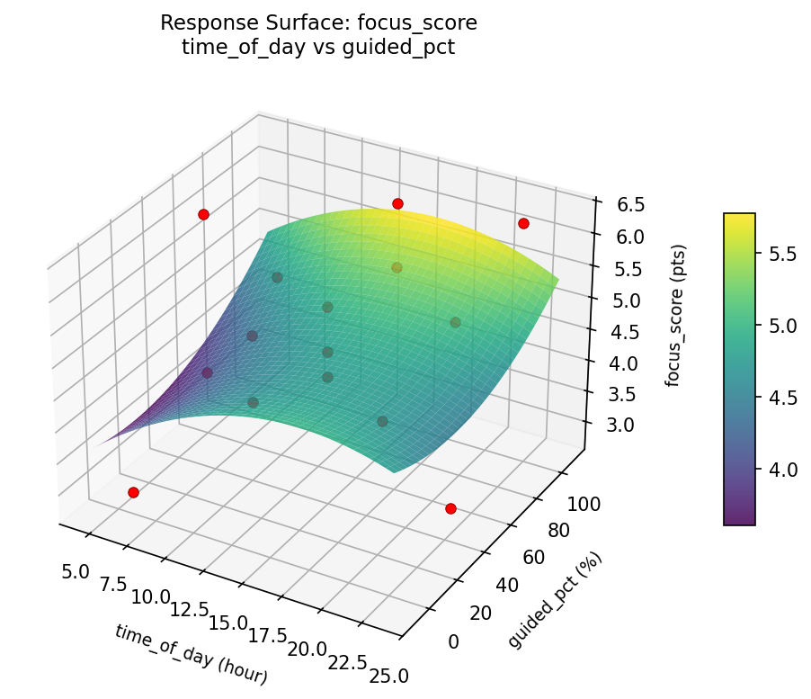
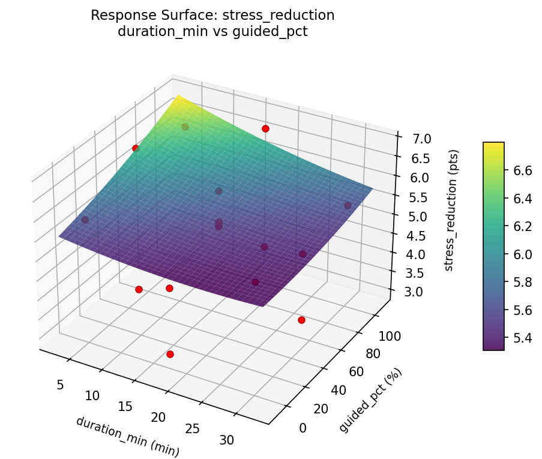
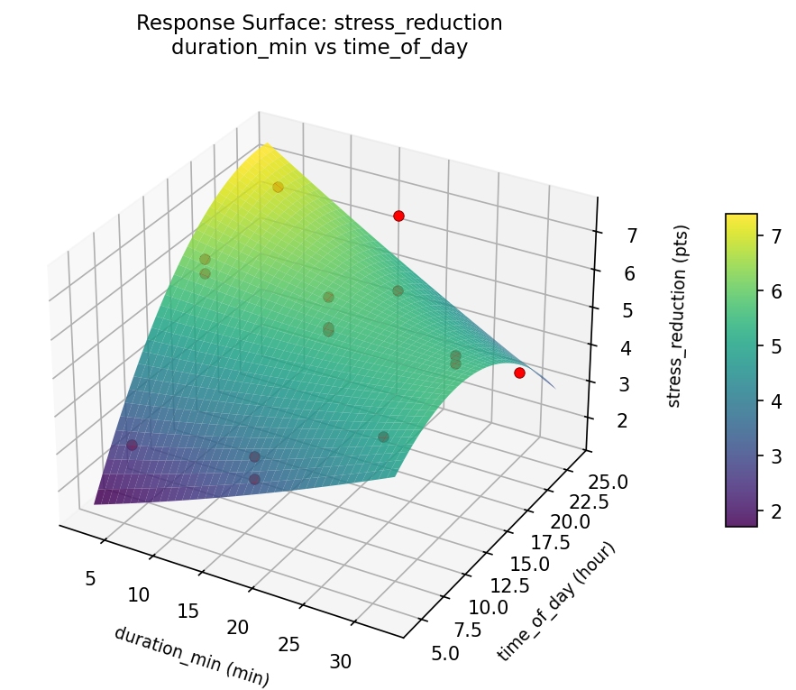
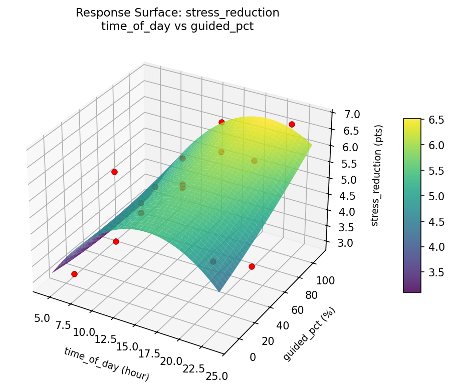

Summary
This experiment investigates meditation routine effectiveness. Box-Behnken design to maximize stress reduction and focus improvement by tuning session duration, time of day, and technique.
The design varies 3 factors: duration min (min), ranging from 5 to 30, time of day (hour), ranging from 6 to 22, and guided pct (%), ranging from 0 to 100. The goal is to optimize 2 responses: stress reduction (pts) (maximize) and focus score (pts) (maximize). Fixed conditions held constant across all runs include frequency = daily, environment = quiet_room.
A Box-Behnken design was chosen because it efficiently fits quadratic models with 3 continuous factors while avoiding extreme corner combinations — requiring only 15 runs instead of the 8 needed for a full factorial at two levels.
Quadratic response surface models were fitted to capture potential curvature and factor interactions. The RSM contour plots below visualize how pairs of factors jointly affect each response.
Key Findings
For stress reduction, the most influential factors were time of day (61.3%), guided pct (21.7%), duration min (17.0%). The best observed value was 6.8 (at duration min = 17.5, time of day = 6, guided pct = 0).
For focus score, the most influential factors were time of day (42.7%), guided pct (38.2%), duration min (19.2%). The best observed value was 6.3 (at duration min = 17.5, time of day = 22, guided pct = 0).
Recommended Next Steps
- Run confirmation experiments at the predicted optimal settings to validate the model.
- Consider whether any fixed factors should be varied in a future study.
Experimental Setup
Factors
| Factor | Low | High | Unit |
|---|
duration_min | 5 | 30 | min |
time_of_day | 6 | 22 | hour |
guided_pct | 0 | 100 | % |
Fixed: frequency = daily, environment = quiet_room
Responses
| Response | Direction | Unit |
|---|
stress_reduction | ↑ maximize | pts |
focus_score | ↑ maximize | pts |
Configuration
{
"metadata": {
"name": "Meditation Routine Effectiveness",
"description": "Box-Behnken design to maximize stress reduction and focus improvement by tuning session duration, time of day, and technique"
},
"factors": [
{
"name": "duration_min",
"levels": [
"5",
"30"
],
"type": "continuous",
"unit": "min"
},
{
"name": "time_of_day",
"levels": [
"6",
"22"
],
"type": "continuous",
"unit": "hour"
},
{
"name": "guided_pct",
"levels": [
"0",
"100"
],
"type": "continuous",
"unit": "%"
}
],
"fixed_factors": {
"frequency": "daily",
"environment": "quiet_room"
},
"responses": [
{
"name": "stress_reduction",
"optimize": "maximize",
"unit": "pts"
},
{
"name": "focus_score",
"optimize": "maximize",
"unit": "pts"
}
],
"settings": {
"operation": "box_behnken",
"test_script": "use_cases/110_meditation_routine/sim.sh"
}
}
Experimental Matrix
The Box-Behnken Design produces 15 runs. Each row is one experiment with specific factor settings.
| Run | duration_min | time_of_day | guided_pct |
|---|
| 1 | 17.5 | 6 | 0 |
| 2 | 17.5 | 14 | 50 |
| 3 | 30 | 14 | 100 |
| 4 | 30 | 14 | 0 |
| 5 | 17.5 | 14 | 50 |
| 6 | 17.5 | 14 | 50 |
| 7 | 5 | 14 | 100 |
| 8 | 30 | 6 | 50 |
| 9 | 17.5 | 6 | 100 |
| 10 | 30 | 22 | 50 |
| 11 | 5 | 14 | 0 |
| 12 | 17.5 | 22 | 100 |
| 13 | 5 | 6 | 50 |
| 14 | 5 | 22 | 50 |
| 15 | 17.5 | 22 | 0 |
Step-by-Step Workflow
1
Preview the design
$ python doe.py info --config use_cases/110_meditation_routine/config.json
2
Generate the runner script
$ python doe.py generate --config use_cases/110_meditation_routine/config.json \
--output use_cases/110_meditation_routine/results/run.sh --seed 42
3
Execute the experiments
$ bash use_cases/110_meditation_routine/results/run.sh
4
Analyze results
$ python doe.py analyze --config use_cases/110_meditation_routine/config.json
5
Get optimization recommendations
$ python doe.py optimize --config use_cases/110_meditation_routine/config.json
6
Generate the HTML report
$ python doe.py report --config use_cases/110_meditation_routine/config.json \
--output use_cases/110_meditation_routine/results/report.html
Features Exercised
| Feature | Value |
|---|
| Design type | box_behnken |
| Factor types | continuous (all 3) |
| Arg style | double-dash |
| Responses | 2 (stress_reduction ↑, focus_score ↑) |
| Total runs | 15 |
Analysis Results
Generated from actual experiment runs using the DOE Helper Tool.
Response: stress_reduction
Top factors: time_of_day (61.3%), guided_pct (21.7%), duration_min (17.0%).
Pareto Chart

Main Effects Plot

Response: focus_score
Top factors: time_of_day (42.7%), guided_pct (38.2%), duration_min (19.2%).
Pareto Chart

Main Effects Plot

Response Surface Plots
3D surfaces fitted with quadratic RSM. Red dots are observed data points.
focus score duration min vs guided pct

focus score duration min vs time of day

focus score time of day vs guided pct

stress reduction duration min vs guided pct

stress reduction duration min vs time of day

stress reduction time of day vs guided pct

Full Analysis Output
RSM surface: rsm_stress_reduction_duration_min_vs_time_of_day.png
RSM surface: rsm_stress_reduction_duration_min_vs_guided_pct.png
RSM surface: rsm_stress_reduction_time_of_day_vs_guided_pct.png
RSM surface: rsm_focus_score_duration_min_vs_time_of_day.png
RSM surface: rsm_focus_score_duration_min_vs_guided_pct.png
RSM surface: rsm_focus_score_time_of_day_vs_guided_pct.png
=== Main Effects: stress_reduction ===
Factor Effect Std Error % Contribution
--------------------------------------------------------------
time_of_day 1.9786 0.3254 61.3%
guided_pct 0.7000 0.3254 21.7%
duration_min 0.5500 0.3254 17.0%
=== Summary Statistics: stress_reduction ===
duration_min:
Level N Mean Std Min Max
------------------------------------------------------------
17.5 7 5.0429 1.3075 3.1000 6.8000
30 4 4.9250 0.9639 3.5000 5.6000
5 4 5.4750 1.6820 3.0000 6.7000
time_of_day:
Level N Mean Std Min Max
------------------------------------------------------------
14 7 5.7286 0.4071 5.3000 6.3000
22 4 5.4500 1.5927 3.5000 6.8000
6 4 3.7500 1.0149 3.0000 5.2000
guided_pct:
Level N Mean Std Min Max
------------------------------------------------------------
0 4 4.8500 1.2557 3.1000 5.9000
100 4 5.5500 1.3626 3.7000 6.8000
50 7 5.0429 1.3452 3.0000 6.7000
=== Main Effects: focus_score ===
Factor Effect Std Error % Contribution
--------------------------------------------------------------
time_of_day 0.8500 0.2899 42.7%
guided_pct 0.7607 0.2899 38.2%
duration_min 0.3821 0.2899 19.2%
=== Summary Statistics: focus_score ===
duration_min:
Level N Mean Std Min Max
------------------------------------------------------------
17.5 7 4.7429 1.0628 2.9000 6.3000
30 4 5.0250 1.5650 2.8000 6.3000
5 4 5.1250 1.0145 3.8000 6.1000
time_of_day:
Level N Mean Std Min Max
------------------------------------------------------------
14 7 5.2000 0.6455 4.3000 6.1000
22 4 5.0000 1.5341 2.8000 6.3000
6 4 4.3500 1.4387 2.9000 6.3000
guided_pct:
Level N Mean Std Min Max
------------------------------------------------------------
0 4 4.7250 1.2868 2.9000 5.9000
100 4 5.4750 0.8884 4.4000 6.3000
50 7 4.7143 1.1992 2.8000 6.3000
Pareto chart (stress_reduction): use_cases/110_meditation_routine/results/analysis/pareto_stress_reduction.png
Pareto chart (focus_score): use_cases/110_meditation_routine/results/analysis/pareto_focus_score.png
Main effects (stress_reduction): use_cases/110_meditation_routine/results/analysis/main_effects_stress_reduction.png
Main effects (focus_score): use_cases/110_meditation_routine/results/analysis/main_effects_focus_score.png
Optimization Recommendations
=== Optimization: stress_reduction ===
Direction: maximize
Best observed run: #8
duration_min = 17.5
time_of_day = 6
guided_pct = 0
Value: 6.8
RSM Model (linear, R² = 0.2021, Adj R² = -0.0155):
Coefficients:
intercept +5.1267
duration_min +0.5000
time_of_day -0.4625
guided_pct -0.3125
RSM Model (quadratic, R² = 0.7933, Adj R² = 0.4213):
Coefficients:
intercept +3.7667
duration_min +0.5000
time_of_day -0.4625
guided_pct -0.3125
duration_min*time_of_day +0.5750
duration_min*guided_pct +0.3750
time_of_day*guided_pct +0.6000
duration_min^2 +0.1667
time_of_day^2 +1.2917
guided_pct^2 +1.0917
Curvature analysis:
time_of_day coef=+1.2917 convex (has a minimum)
guided_pct coef=+1.0917 convex (has a minimum)
duration_min coef=+0.1667 convex (has a minimum)
Notable interactions:
time_of_day*guided_pct coef=+0.6000 (synergistic)
duration_min*time_of_day coef=+0.5750 (synergistic)
duration_min*guided_pct coef=+0.3750 (synergistic)
Predicted optimum (from quadratic model):
duration_min = 17.5
time_of_day = 6
guided_pct = 0
Predicted value: 7.5250
Model quality: Good fit — general trends are captured, some noise remains.
Factor importance:
1. time_of_day (effect: 1.7, contribution: 42.0%)
2. guided_pct (effect: 1.3, contribution: 32.8%)
3. duration_min (effect: 1.0, contribution: 25.2%)
=== Optimization: focus_score ===
Direction: maximize
Best observed run: #4
duration_min = 17.5
time_of_day = 22
guided_pct = 0
Value: 6.3
RSM Model (linear, R² = 0.2373, Adj R² = 0.0293):
Coefficients:
intercept +4.9200
duration_min +0.2250
time_of_day -0.3125
guided_pct -0.6125
RSM Model (quadratic, R² = 0.6696, Adj R² = 0.0749):
Coefficients:
intercept +3.9333
duration_min +0.2250
time_of_day -0.3125
guided_pct -0.6125
duration_min*time_of_day +0.0250
duration_min*guided_pct +0.3750
time_of_day*guided_pct +0.2000
duration_min^2 -0.0167
time_of_day^2 +1.2583
guided_pct^2 +0.6083
Curvature analysis:
time_of_day coef=+1.2583 convex (has a minimum)
guided_pct coef=+0.6083 convex (has a minimum)
duration_min coef=-0.0167 negligible curvature
Notable interactions:
duration_min*guided_pct coef=+0.3750 (synergistic)
Predicted optimum (from quadratic model):
duration_min = 17.5
time_of_day = 6
guided_pct = 0
Predicted value: 6.9250
Model quality: Moderate fit — use predictions directionally, not precisely.
Factor importance:
1. time_of_day (effect: 1.5, contribution: 47.7%)
2. guided_pct (effect: 1.2, contribution: 38.2%)
3. duration_min (effect: 0.5, contribution: 14.0%)